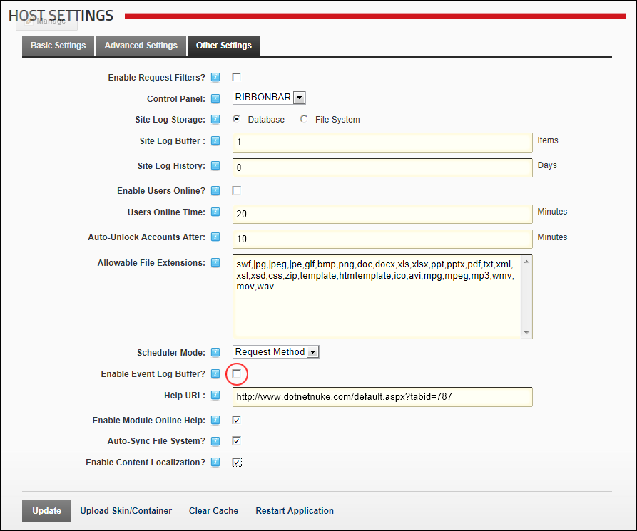

Disabling/Enabling Event Log Buffer
How to enable or disable the Event Log Buffer for all new sites.
Navigate to Host >
Host Settings
.
Select the
Other Settings
tab.
At
Enable Event Log Buffer
, select from the following options:
to enable.
to disable.

 Host Settings.
Host Settings.